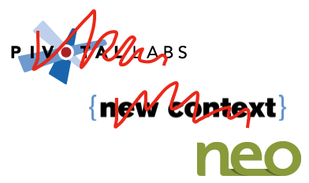
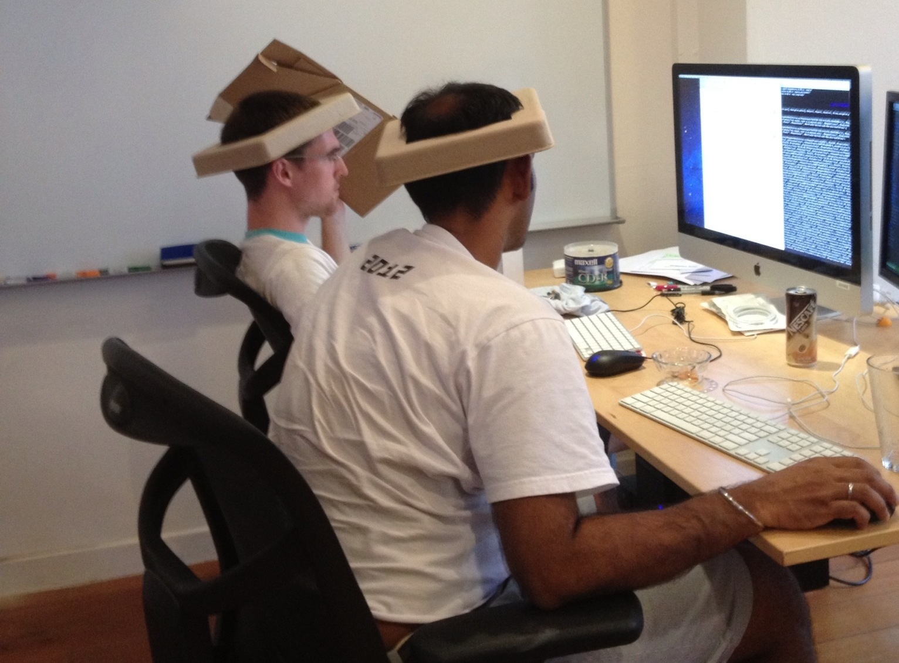
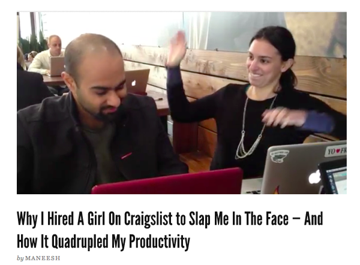

A Journey into
Pair Programming
Wei Lu
@luweidewei
Things I know to be true

Coding is fun!
Source: http://en.wikipedia.org/wiki/File:Uwaterloo_seal.gif

Sharing is a great way to learn!
Source: http://en.wikipedia.org/wiki/File:NationalUniversityofSingapore.svg

Freedom is nice!
Source: http://rocketfuel.com/resources

Engineers are precious!

Source: http://en.wikipedia.org/wiki/File:Stanford_University_seal.svg
http://www.flickr.com/photos/claudiaveja/2281610267/

Let's pair!
Source: www.pivotallabs.com

Source: Carl Coryell-Martin

Source: Carl Coryell-Martin
tête-à-tête pairing station

Source: Carl Coryell-Martin

Source: Carl Coryell-Martin

Source: http://www.funny-games.biz/images/pictures/1770-kung-fu-table-tenis.jpg
Why pairing?
- Happy programmer
The results demonstrate that Pair Programming has actually a strong positive effect on satisfaction, work sustainability, and communication.
W. Pedrycza, B. Russob, and G. Succi (2010)
http://simula.no/research/se/publications/Arisholm.2006.2
http://www.sciencedirect.com/science/article/pii/S0164121210003407
Why pairing?
- Code quality & Productivity
On the more complex system, the pair programmers had a 48 percent increase in the proportion of correct solutions, but no significant differences in the time taken to solve the tasks correctly. For the simpler system, there was a 20 percent decrease in time taken but no significant differences in correctness.
E. Arisholm, H. E. Gallis, T. Dybå, and D. I. K. Sjøberg (2007)
Why pairing?

http://hackthesystem.com/blog/why-i-hired-a-girl-on-craigslist-to-slap-me-in-the-face-and-why-it-quadrupled-my-productivity/
Is pairing for me?
-
Enjoy coding
-
Like sharing
-
But...
What about my freedom?
Would you trade your freedom for..?
-
An open and friendly environment
-
Productivity and excellence
-
Somebody who's always in it with you
source: http://blog.lifecellar.com/2011/07/20/easy-ways-to-work-while-you-travel/
What about someone constantly looking over your shoulder?
Like a good relationship
-
Nervous
-
Excited
-
Think on your feet
-
Focused
-
Efficient
-
Analytical
-
Reflective
-
Better
source: http://kicsterash.deviantart.com/art/Two-is-better-Than-One-sketch-264917841
Let's talk about Relationships
Chapter 1
Jedi Master

source: http://starwars.wikia.com/wiki/Jedi_Master

source: http://flamesnation.ca/2010/12/2/dont-panic-2
-
Observe & learn
-
Ask questions
-
Get a hold of the keyboard
-
Ask for keyboard nicely
-
Ask for keyboard
-
Demand for keyboard
source: http://cuteoverload.com/2006/09/30/get_back_to_wor/
Mutually Beneficial Relationship
Newbie:
Massive, massive knowledge transfer
Jedi master:
Still more productive
Healthy to be challenged
Chapter 2
Your Doppelganger

source: http://images.wikia.com/familyguy/images/a/a2/FGQuagmiresBaby1.jpg
-
More balanced ping pong
-
Working through the problems together
-
Research should be done separately
Collaborative Learning Relationship
Less frustration
Happier developers
Better sustainability
Chapter 3
Undercover Agent
source: http://iconicphotos.wordpress.com/2009/12/07/when-putin-met-reagan/
-
Be ready to reason
-
Ask for better alternatives
-
Stay positive & focus on the task
-
Let patterns emerge
Love-Hate Relationship
Much more principled
More patient
Better people skills
Bonus Chapter
Best Friend
Awesome
True Story
source: http://ragefac.es/141
Appendix
Pairing Tips
-
Take short breaks frequently
-
Good/bad pairing days
-
Never take it personally
Two is better than one
-
Knowledge transfer
-
Keep each other honest and focused
-
Better code
-
Happier coders
Try pairing!
Don't give up
Twenty years from now you will be more disappointed by the things that you didn't do than by the ones you did do.
Mark Twain